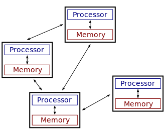

class: center, middle, title-slide ## CSCI 340 Operating Systems <br> ## Chapter 1: Introduction .author[ Stewart Weiss<br> ] .license[ Copyright 2020 Stewart Weiss. Unless noted otherwise all content is released under a [Creative Commons Attribution-ShareAlike 4.0 International License](https://creativecommons.org/licenses/by-sa/4.0/). Background image: roof of the EPIC Museum, Dublin, by Stewart Weiss. ] --- name: cc-notice template: default layout: true .bottom-left[© Stewart Weiss. CC-BY-SA.] --- name: tinted-slide template: cc-notice layout: true class: tinted --- name:toc ### Table of Contents [What Is This Course About?](#overview)<br> [This Chapter's Objectives](#objectives)<br> [Computer System Components](#computer-system-components)<br> [Layered Structure of Computer System](#layered-view)<br> [Operating System Requirements](#opsys-requirements)<br> [Other Considerations](#opsys-requirements2)<br> [Additional Operating System Requirements](#opsys-requirements3)<br> [Operating System Services](#opsys-service-categories)<br> [Trying to Define "Operating System"](#opsys-defs)<br> [System Programs](#system-programs)<br> [The General Structure of a Typical Computer](#computer-org-overview)<br> [Main Components](#computer-components-1)<br> [Main Components (Continued)](#computer-components-2)<br> [Device Drivers](#device-drivers)<br> [Computer System Operations](#computer-operations)<br> [Typical I/O Read Operation](#read-operation)<br> [Interrupt Overview](#interrupt-overview)<br> [Interrupts Visualized](#interrupt-visualized)<br> [Interrupts Step-By-Step](#interrupt-mechanism1)<br> [Finding and Running the Interrupt Service Routine](#interrupt-service-routine)<br> [Interrupt Masking](#interrupt-masking)<br> --- ### Table of Contents [Interrupt Priorities](#interrupt-priorities)<br> [Traps and Exceptions](#exceptions)<br> [Interrupt-Driven I/O](#io-cycle)<br> [Storage Concepts](#storage-concepts)<br> [Measuring Storage: Bits, Bytes, and Words](#storage-measurements-1)<br> [Measuring Storage: Larger Amounts](#storage-multiples)<br> [The Different Types of Storage](#storage-components)<br> [The Memory Hierarchy](#memory-hierarchy)<br> [Storage in the CPU](#storage-cpu)<br> [Random Access Memory](#storage-ram)<br> [Magnetic Disk Drives and Solid-State Drives](#storage-magnetic-disk)<br> [Tertiary Storage Media](#storage-tertiary)<br> [Caches and Caching](#storage-cache)<br> [Processor Cache](#processor-cache)<br> [I/O and Direct Memory Access](#dma)<br> [DMA Operation](#dma-steps)<br> [Single Processor Systems](#single-processor)<br> [Multicomputers and Multiprocessors](#multiprocessors)<br> [A Multicomputer Architecture](#multicomputer)<br> [Symmetric Multiprocessors](#smp)<br> [Multi-core SMP](#multicore-smp)<br> [Non-Uniform Memory Access Multiprocessors](#numa)<br> [Clustered Systems](#clusters)<br> --- ### Table of Contents [System Start-Up: Stage 1](#booting)<br> [System Start-Up: Stage 2](#opsys-services)<br> [Origins of Multiprogramming](#multiprogramming-1)<br> [Multiprogramming](#multiprogramming-2)<br> [Batch Processing](#multiprogramming-3)<br> [Interactive Computing](#interactive-computing)<br> [Time-sharing Infrastructure](#timesharing)<br> [Multitasking](#multitasking)<br> [Protection Levels](#protection-levels)<br> [Use of Dual-Mode Operation](#dual-mode2)<br> [System Call Schematic in Linux](#syscall-graphic)<br> [Timers](#timers)<br> [Process Management: What are Processes?](#processes)<br> [Process Management](#process-management)<br> [The Memory Resource](#memory-resource)<br> [Memory Management](#mem-management-tasks)<br> [Files and File Systems](#file-systems)<br> [File System Management](#file-systems-2)<br> [Storage Management](#storage-management)<br> [Caching Revisited](#caching)<br> [Cache Management](#cache-management)<br> [The I/O Subsystem](#io-subsystem)<br> [Protection and Security](#security)<br> --- ### Table of Contents [Protection and Security Management](#security-management)<br> [Distributed Systems](#distributed-systems)<br> [Network and Distributed Operating Systems](#network-opsys)<br> [Free and Open Source Software](#foss)<br> [Free and Open Source Operating Systems](#foss-opsys)<br> [References](#references)<br> <!--TOC_END--> --- name: overview ### What Is This Course About? This is an overview of .greenbold[ computer operating systems]. .redbold[It is not an in-depth study of them.] The major topics that it covers are - What operating systems do - How computer systems are organized and structured, including the software-hardware interface - How operating systems are structured - .greenbold[Processes] and their relationship to operating systems: process management, concurrency and parallelism, process synchronization, and deadlocks - The .greenbold[memory hierarchy] and its relationship to operating systems, including the operating system's role in managing memory - .greenbold[Secondary storage] and .greenbold[I/O devices] and their relationship with operating systems - A bit of the history of operating systems and how open source operating systems have influenced their development. .footnote[ These slides are intended to accompany reading of the textbook, _Operating System Concepts, 10th Edition_ by Silberschatz, Gagne, and Galvin. ] --- name: objectives ### This Chapter's Objectives The goals of this chapter are to make sure that you understand - .redbold[what] operating systems actually do and what they do not do, - .redbold[how] operating systems do what they do, - how operating systems .redbold[are structured], and - enough about the underlying hardware to give context to the tasks an operating system must perform, and how it interacts with that hardware layer, including - general organization of a computer system, including multiprocessor systems, - interrupts and their relationship to operating system functionality, - dual mode operation, and - storage and memory technologies and their impact on operating systems. --- name: computer-system-components ### Computer System Components In general, a .bluebold[system] is a cohesive collection of interrelated and interdependent parts. A .bluebold[computer system] includes the .greenbold[hardware] and the .greenbold[software] that together make the aggregate usable by .greenbold[users], which include not just people, but machines or other .greenbold["things"]. -- - .bluebold[Hardware] includes processors, I/O devices, all types of memory and secondary storage. -- - .bluebold[Software] includes the .greenbold[operating system] and the software that uses it, which is called the .greenbold[application layer]. -- - The <span class=bluebold>operating system </span> is the software that interacts directly with the hardware; applications do not. -- - <span class=bluebold> The application layer </span> includes software development tools, web browsers, all types of media editors and viewers, shells, commands, etc. <span class=redbold>_User data is part of the application layer_ </span>. --- name: layered-view ### Layered Structure of Computer System The components of a computer system form a sequence of .greenbold[layers]: .center[ ] Only adjacent layers have interactions with each other. .redbold[For example], - applications do not directly communicate with or control hardware, and - users only interact with the application layer (which includes shells like .fixedblue[bash] in Linux.) --- name: opsys-requirements ### Operating System Requirements The layered structure of a computer system implies that an operating system has three important responsibilities: 1. The operating system alone must control the hardware resources. -- 1. The operating system alone must enable and control the execution of all other software on the computer. -- 1. The operating system must give users the ability to develop and run applications and manage their data. -- .redbold[But these are not the only things for which operating systems are responsible]. --- name: opsys-requirements2 ### Other Considerations There are other considerations that affect what else operating systems is required to do. -- There are requirements coming from .redbold[what users want]: -- - Users want their time on the computer to be spent .redbold[efficiently]. - Users want their data to be .redbold[secure]. - Users want using the computer to be as .redbold[convenient] and easy as possible. - Users may want to be able to .redbold[share] data and applications .redbold[selectively with other users]. -- A computer, on some level, exists to produce value, directly or indirectly, for its owner. The more productive it is, the more value is created for the owner. This leads to additional requirements: -- - The computer resources should be .redbold[utilized as efficiently as possible], maximizing the amount of work it performs per unit time. - The computer resources should be .redbold[protected] from all possible intentional and unintentional abuses. - It should be possible to .redbold[allocate resources as needed] among various users. --- name: opsys-requirements3 ### Additional Operating System Requirements Preceding considerations lead to these additional tasks that operating systems must perform: -- - An operating system should manage the resources of a computer system in such as way as to allow .redbold[reliable sharing of data and applications]. -- - An operating system should provide .redbold[security and protection] of all hardware and software on the computer system. -- - An operating system should provide robust .redbold[error handling and recovery]. -- - An operating system should allocate resources fairly to users while trying to .redbold[maximize overall throughput, minimize response time] to as many users as possible, and .redbold[maximize the utilization] of all hardware resources in the system. --- name: opsys-service-categories ### Operating System Services The most common services performed by operating systems can be categorized as follows. -- - .greenbold[Program execution] - loading and executing programs; providing synchronization, communication, and security -- - .greenbold[I/O operations] - providing all I/O services to users and applications -- - .greenbold[File systems] - creating and maintaining file systems and means of manipulating them -- - .greenbold[Communication] - providing mechanisms that allow programs to communicate with each other -- - .greenbold[Error detection and recovery] - detecting and handling error conditions -- - .greenbold[Protection and security] - preventing unauthorized or improper access to all resources, and protecting users from each other's attempts to invade privacy or corrupt data. -- - .greenbold[Accounting] - monitoring and recording various performance and utilization metrics, for both users and the system. --- name: opsys-defs ### Trying to Define "Operating System" People disagree about the definition of the term "operating system." -- - Some say it is just the program, often called the .greenbold[kernel], that is loaded into memory on start-up and remains in memory, controlling the computer, until it is shut down. -- - Others say it is the collection of programs, including the kernel, that provide services to applications and users, including all .greenbold[system programs]. We discuss system programs shortly. -- To remove all ambiguity in this course, we make the following definition: the .redbold[operating system is the kernel program and nothing more.] --- name: system-programs ### System Programs .redbold[This is a fuzzy concept at best]. .bluebold[System programs] are typically programs shipped or downloaded when the operating system is installed. .redbold[For example]: - .greenbold[Software updaters/package managers] - programs that track, download, and install updates to your operating system or other software or install new software. - .greenbold[Compilers, linkers, loaders, debuggers, etc.] - programs that enable you to build your own software. - .greenbold[File management commands] such as commands to navigate the file system, list directories, and so on. -- On a .greenbold[Linux system], system programs include most of the commands that you typically type on the command line. To be more precise, these are commands that are found in the directories, .fixedblue[/bin], .fixedblue[/usr/bin], .fixedblue[/usr/sbin], and .fixedblue[/sbin]. Almost all of these programs can only be invoked as commands on the command line in a terminal window, but there are some that can (also) be invoked through a graphical user interface such as .fixedblue[Gnome] using menus or clickable icons. -- .redbold[Do not confuse system programs with applications.] Applications are usually programs that you install. Some applications come "bundled" with the operating system for your convenience. Applications are typically installed in the directories .fixedblue[/usr/local/bin] or .fixedblue[/opt]. --- name: system-prog-activity count: false class: breakout ### System Program Activity Take a look in the .fixedblue[/bin] directory on .fixedblue[eniac.cs.hunter.cuny.edu] to see what commands are in it: - Login to .fixedblue[eniac.cs.hunter.cuny.edu] - Type the command ```bash ls /bin ``` and record three different commands that you see there. These are system programs. --- name: computer-organization layout: false class: center, middle, inverse ## Computer Organization We examine the physical components of a computer system and how they interact with each other. --- template: tinted-slide layout: true --- name: computer-org-overview ### The General Structure of a Typical Computer A modern, general-purpose computer consists of one or more .greenbold[CPUs], one or more .greenbold[memory units], and a set of .greenbold[device controllers], all of which are connected by a common .greenbold[bus], usually called the .greenbold[system bus]. The figure below illustrates how these components interconnect. Notice that there is a separate line labeled "interrupts", to be discussed shortly. .center[ ] --- name: computer-components-1 ### Main Components #### CPUs Most modern computers contain more than one processor. When several processors are integrated into a single chip, each one is called a .bluebold[core] and the machine itself is called a .bluebold[multi-core processor]. -- #### System Bus The .bluebold[system bus] is a single communication path that connects the major components of a computer system, combining the functionality of a .greenbold[data bus], an .greenbold[address bus], and a .greenbold[control bus]. A system bus typically consists of many parallel wires. The number of wires is called the .bluebold[width] of the bus. -- #### Memory .bluebold[Memory units] are self-contained primary storage, i.e. random-access, devices. They are usually .redbold[volatile] and are connected directly to the system bus. Memory units are controlled by a .bluebold[memory controller], which synchronizes access to the memory from the devices that want to access it, and responds to requests to transfer data to and from memory. --- name: computer-components-2 ### Main Components (Continued) #### Device Controllers A .bluebold[device controller] is a special-purpose processor that controls a specific type of device, such as a disk or a keyboard. It may be connected to multiple instances of this type of device, or just one. It typically has a number of special-purpose registers, buffer memory, and control logic that responds to specific instructions. A device controller is responsible for moving data between the devices that it controls and its local memory. It responds to instructions submitted to it through the bus, and can query the status of the attached devices. -- Because device controllers are special-purpose microprocessors with their own unique instruction sets, the software to control them is also highly specialized and specific to each different one. The code needed for an Ultra320 SCSI disk controller is very different from the code needed for a Parallel ATA disk controller. -- This is why the code written to control each controller is separated from the rest of the operating system and placed into its own module called a .greenbold[device driver]. --- name: device-drivers ### Device Drivers In a modern operating system, .redbold[every device controller has an associated device driver.] -- A .bluebold[device driver] is a program or software module that can "drive" that controller in much the same way that a person can drive a car. It "knows" the controller's instruction set and its interface and can send instructions to the device to perform actions, such as reading a number of blocks of data from a disk to transfer to a memory location, or to stop or start the device. -- Most operating systems have the ability to detect which device drivers they need and integrate them into the operating system itself as separate modules. _The primary purpose of the device drivers is to provide a higher layer of abstraction, so that the operating system programmers do not need to know the details of the device controllers to write code to perform tasks using those devices._ -- .redbold[For example], a serial port might only present two "public" functions, one to send data and one to receive data. A device driver that implements these functions would communicate with the particular serial port controller installed on the computer. .redbold[Different serial ports have different instruction sets and architectures], so each serial port may have a different device driver, but each device driver hides the hardware-specific differences and presents the same software interface to the software layer above. The operating system programmer just needs to know the common software interface that the device drivers present to them. --- name: computer-operations ### Computer System Operations Peripheral devices such as keyboards, mice, network interfaces, and external storage devices can operate concurrently with the processors. .redbold[For example], a program might be running on a CPU while a user types on a keyboard, or moves a mouse, or while data is arriving from the local network. -- These concurrent activities usually involve moving data to or from memory, and/or may require that the CPU take some specific action in response to specific events. .redbold[Example]. When the user types a "Control-C" on the keyboard while a terminal window has focus and a program is running in the terminal's command line (the shell), that program is typically terminated. Somehow, that Control-C must be detected and the fact of its occurrence transmitted to a program that can terminate the running program. A lot has to happen to make this work. -- - What part of this is done by hardware? Which hardware? - What part of this is done by software? Which software? -- The key to all of this is the use of .greenbold[interrupts]. .redbold[All modern operating systems are interrupt-driven]; after the boot completes, they run only as a result of interrupts. --- name: read-operation ### Typical I/O Read Operation To illustrate, we discuss what happens when a running program issues a request to read data from a hard disk. The program's .greenbold[read request] causes a device driver to run. We ignore the steps leading to this for now. -- - The device driver loads the appropriate registers in the device controller in order to start the read operation. When it has done this, some other program is chosen to run on the CPU. -- - The device controller responds by examining the contents of these registers and it determines (1) that it is a read operation and (2) which data must be read. -- - The controller starts the transfer of the data from the device to its local buffer. -- - When the transfer of data is complete, .redbold[the device controller informs the device driver that it has finished its operation]. -- - The device driver runs again. It is responsible for the remainder of the work, which includes notifying the operating system that the I/O is complete and transferring the data to an appropriate place in memory. -- .redbold[ How does the controller inform the device driver that it has finished its operation? ] -- By issuing an .greenbold[interrupt request]. --- name: interrupt-overview ### Interrupt Overview What are interrupts and interrupt requests? An .bluebold[interrupt] is a temporary break in the continuity of the process running on the processor in order to respond to some condition needing attention. When an interrupt takes place, the state of the processor is saved, and special code runs that .greenbold[handles] the specific condition requiring attention. This code is called either an .bluebold[interrupt service routine] (.bluebold[ISR]) or an .bluebold[interrupt handler]. A device needing attention can request an interrupt by sending a signal to the processor. This signal is called an .bluebold[interrupt request]. The acronym .bluebold[IRQ] is short for interrupt request. .redbold[The distinction between interrupts, interrupt requests, and the events requiring attention is often blurred], and people may call any of them an .bluebold[interrupt] for short. Thus, if a hard disk completed a read operation and issued an IRQ as a result of it, we might say it issued an interrupt, or it raised an interrupt, and we might also say the read event itself caused an interrupt. --- name: interrupt-visualized ### Interrupts Visualized Every computer has a clock or timer that causes interrupts at regular intervals. Every 1 millisecond or so, the clock sends an interrupt request so that the system can keep track of the time or do maintenance. The running program is interrupted and a routine runs that increments the count of ticks. When it finishes, the interrupted program resumes execution, as shown below. .center[ <img src="figures/interrupt_timeline_walpha.png" width=100% alt="interrupt timeline"/> ] --- name: interrupt-mechanism1 ### Interrupts Step-By-Step A simplification of what happens is as follows. 1. A device issues an interrupt request by sending a signal on the system bus. -- 1. The signal is received by the CPU. -- 1. The CPU saves the value of the program counter (PC). -- 1. It loads the PC with the starting address of the interrupt service routine for that device. -- 1. The contents of the remaining registers are saved in an appropriate place. -- 1. The interrupt service routine (ISR) runs. -- 1. When the ISR finishes, the saved registers are restored and the PC is loaded with the saved value; the interrupted computation is resumed. -- .redbold[Step 4 suggests that the CPU knows which device caused the interrupt. How does it know this?] -- .redbold[In step 4, how does the system know the starting address to load ino the PC?] --- name: interrupt-service-routine ### Finding and Running the Interrupt Service Routine There are two different methods of determining which device caused the interrupt and where the starting address of its interrupt service routine is stored. -- .left-column[ #### Method 1: .bluebold[Polling the Devices] (Rarely Used) An IRQ is received by the CPU but it does not indicate which device caused the interrupt. There is a single ISR that runs when an interrupt occurs. This ISR sends a signal to each device that amounts to the question, "did you just send an IRQ?". The first device to answer "yes" is the one that will be serviced. The ISR has code that causes a jump to the correct device driver. ] --- name: interrupt-service-routine count: false ### Finding and Running the Interrupt Service Routine There are two different methods of determining which device caused the interrupt and where the starting address of its interrupt service routine is stored. .left-column[ #### Method 1: .bluebold[Polling the Devices] (Rarely Used) An IRQ is received by the CPU but it does not indicate which device caused the interrupt. There is a single ISR that runs when an interrupt occurs. This ISR sends a signal to each device that amounts to the question, "did you just send an IRQ?". The first device to answer "yes" is the one that will be serviced. The ISR has code that causes a jump to the correct device driver. This method is called .bluebold[polling] because it polls each device. .redbold[It is inefficient]. ] -- .right-column[ #### Method 2: .bluebold[Vectored Interrupts] (Almost Always Used) ] --- name: interrupt-service-routine count: false ### Finding and Running the Interrupt Service Routine There are two different methods of determining which device caused the interrupt and where the starting address of its interrupt service routine is stored. .left-column[ #### Method 1: .bluebold[Polling the Devices] (Rarely Used) An IRQ is received by the CPU but it does not indicate which device caused the interrupt. There is a single ISR that runs when an interrupt occurs. This ISR sends a signal to each device that amounts to the question, "did you just send an IRQ?". The first device to answer "yes" is the one that will be serviced. The ISR has code that causes a jump to the correct device driver. This method is called .bluebold[polling] because it polls each device. .redbold[It is inefficient]. ] .right-column[ #### Method 2: .bluebold[Vectored Interrupts] (Almost Always Used) The interrupt lines on the bus are .greenbold[vectored]: each device can send its identity along with the IRQ. When the CPU receives the IRQ, it can extract the identity of the device that needs service. The identity is an integer value. The system maintains a table, usually in low memory, that maps each integer device identity to the starting address of its ISR. This table is called the .bluebold[interrupt vector] or the .bluebold[interrupt vector table]. If there are many devices, sometimes the table is a linked list of ISR addresses. ] --- name: interrupt-masking ### Interrupt Masking There are two types of interrupts: .greenbold[maskable] and .greenbold[non-maskable]. A .bluebold[maskable interrupt] is one that can be disabled temporarily. There is a register that contains a bit for each interrupt type, and that bit is used to determine whether or not to disable (i.e., mask) the interrupt. Maskable interrupts are non-critical. A .bluebold[non-maskable interrupt] is one that cannot be disabled. It must be serviced. It is not affected by the interrupt mask register. Examples are errors from memory and timer interrupts. In some systems, disabling an interrupt means ignoring it completely. In others, it is possible to .greenbold[defer] processing the interrupt if it is disabled. Deferred interrupts are saved, usually in a queue, and handled in a specific order at a future time. --- name: interrupt-priorities ### Interrupt Priorities Some interrupts have higher priorities than others: if the CPU is in the middle of servicing an interrupt request, and a higher priority request occurs, it should interrupt the current ISR. On the other hand, if an interrupt request has lower priority then one being serviced by the CPU, it should be ignored. Most systems have a method of .greenbold[prioritizing interrupts], either in hardware alone, or in both hardware and software. -- #### .redbold[Example] The .greenbold[mask register] can be used to set the interrupt priority level of the processor using a left-to-right ordering of the mask bits. - Each device has an associated priority level, and the ISR for that device runs at that priority level. The priority level is an integer corresponding to a bit position. - .redbold[If an interrupt occurs whose bit is to the left of another one, it has higher priority]. If its mask bit is on, it is enabled, otherwise it is disabled. - By turning off all bits to the right of a given bit, the processor masks all interrupts whose priority is lower than the given one. - If a lower priority interrupt occurs, it is ignored. If one occurs that is at equal or higher priority, the currently running ISR is interrupted and the ISR for the new one runs. --- name: exceptions ### Traps and Exceptions In English, an .greenbold[exception] is an uncommon event. In computing it is supposed to be an uncommon event. An .bluebold[exception] is a software-generated interrupt. It is caused by the execution of a software instruction. Examples of exceptions are - floating-point errors such as divide-by-zero, - attempts to execute invalid opcodes, and - attempts to access memory locations outside of the process's allowed memory. -- The term .bluebold[trap] is often used as a synonym for exception, but it is not. Traps are a specific type of exception. - The Intel 80x86 architecture defines a trap as follows: A .bluebold[trap] is a programmer-initiated (and consequently expected) transfer of control to a handler routine. (The .fixedblue[int] assembly instruction is a trap.) - In the Linux kernel, a trap is a specific type of exception. There are other types of exceptions as well. On Intel chips, the .fixedblue[eip] register is queried to decide the type. In short, traps are actual instructions coded into programs intentionally that cause an interrupt, whereas exceptions are any interrupts generated by software. We will see how traps are used in the next chapter, when we discuss .bluebold[system calls]. --- name: io-cycle ### Interrupt-Driven I/O .left-column[ Recall that modern operating systems are interrupt-driven; they only run as a result of interrupts. All I/O occurs as a result of interrupts. To illustrate this, in the figure to the right, we have augmented the sequence of steps described in the slide, [Typical Read Operation](#read-operation) to show how interrupts are used in the read operation. ] .right-column[ <img src="figures/read-io-a.gif" width=100% alt="read i/o"/> ] --- name: interrupt-activity count: false class: breakout ### Interrupt Activity Take a look in the .fixedblue[/proc] directory on .fixedblue[eniac.cs.hunter.cuny.edu] to see what types of interrupts are hitting the CPUs recently: - Login to .fixedblue[eniac.cs.hunter.cuny.edu] - Navigate to the .fixedblue[/proc] directory: ```bash cd /proc ``` - Make your terminal window as wide as possible. - Then, using a command such as .fixedblue[more], view the contents of the file named .fixedblue[interrupts]. There is a column for each logical CPU and a row for different interrupts. - Which type of interrupt has occurred the most and on which CPU. Write what you find as instructed in class. --- template: default layout: true --- name: storage background-image: url(figures/storage.jpg) class: center, middle # Storage We review concepts of storage and the various types of storage used in computer systems. .bottom-left[ image (cropped): [Smuconlaw](https://commons.wikimedia.org/wiki/File:Archaeology_storage_room,_Heritage_Conservation_Centre,_Singapore_-_20141125-01.jpg), [CC-BY-SA](https://creativecommons.org/licenses/by-sa/4.0/). ] --- template: tinted-slide layout: true --- name: storage-concepts ### Storage Concepts Storage media and devices can be characterized in many ways, such as by their cost, reliability, capacity, and so on. We define the key properties of interest. -- - .bluebold[Capacity] is total amount of stored information that a storage medium or device can hold. It is measured in either .greenbold[bits] or .greenbold[bytes], both of which are defined in the next slide. -- - .bluebold[Volatility] refers to whether or not the information stored on a storage medium is retained when power is not continuously supplied to that medium. A .greenbold[non-volatile] storage medium retains the information whereas a .greenbold[volatile] one does not. -- - .bluebold[Access time] is the amount of time that it takes the medium or device to access the information at a given location. This time may vary depending on whether the access is to read information or to store it. -- - .bluebold[Accessibility] refers to two different types of access to the locations on a storage medium. - <span class=bluebold> Random access </span> media are those such that all locations can be accessed in about the same amount of time. - <span class=bluebold>Sequential access </span> media are those such that the information must be accessed in sequential order. This implies that the time to access a particular piece of information depends upon where that information is stored on the medium. Magnetic tape is an example of a sequential access medium. --- name: storage-measurements-1 ### Measuring Storage: Bits, Bytes, and Words - A .bluebold[bit] is the smallest unit of information. A bit has two possible values, which we represent as the numbers 0 and 1. The unit symbol for a bit is lowercase 'b'; _128b_ means 128 bits. -- - A .bluebold[byte] is the .redbold[smallest addressable unit of storage] in a computer and consists of .redbold[eight bits]. There have been many different definitions of a byte, but over time, the eight-bit byte became the _de facto_ standard. The unit symbol for a byte is uppercase 'B', e.g., _4096B_ means 4096 bytes. -- - A .bluebold[word] is the size of a given computer’s .redbold[native unit of data]. - Typically, it is the size of a general-purpose register, the size of a machine instruction, and the size of the data chunk that is transferred to and from memory. - A word consists of one or more bytes. The .bluebold[word length] or .bluebold[word size] is the number of bits in a word. - A "64-bit" architecture has a word length of 64 bits or eight bytes. It has 64-bit registers and 64-bit memory addresses. --- name: storage-multiples ### Measuring Storage: Larger Amounts In practice, we often describe amounts of data and storage sizes that are orders of magnitude larger than bytes and words. We need to talk about thousands, millions, billions, trillions or more bytes, and so we use units whose sizes are commensurate with these magnitudes. Below are commonly used units and their meanings. | | | | | |:--- |:--- |:--- |:--- | | __Unit__ | __Actual Number of Bytes__ | __As Power of 2__ | __Abbreviation__ | | kilobyte | 1024 | 2^10 bytes | 1 KB | | megabyte | 1048576 | 2^20 bytes | 1 MB | | gigabyte | 1073741824 | 2^30 bytes | 1 GB | | terabyte | 1099511627776 | 2^40 bytes | 1 TB | | petabyte | 1125899906842624 | 2^50 bytes | 1 PB | Some computer manufacturers misuse these terms. For example, a hard disk vendor might say a disk has 500 gigabytes when it has 500 billion bytes. Storage is measured in these binary-based units, but transmission rates, bandwidths, and other rates expressed as a function of bytes per unit time generally use the decimal approximations or express in bits per time. Thus, a bandwidth of 50MB/second means 50,000,000 bytes per second. --- name: storage-components ### The Different Types of Storage Modern computers have many different types of storage: - .bluebold[Primary storage] refers to storage that is directly accessible to the processor. - .bluebold[Secondary storage] refers to storage that is not directly accessible to the processor, but can be accessed through the I/O channels, and so is still considered to be .greenbold[on-line]. - .bluebold[Tertiary storage] refers to storage that is not directly accessible to the processor, and cannot be accessed through the I/O channels without some intervention by a human or a mechanical system. Tertiary storage is therefore .greenbold[off-line].super[1]. .footnote[ 1 There are tertiary storage systems that are semi-online because a robotic system can automatically attach them to the computer system. ] The different storage components of a general purpose computer system are as follows, listed in order of increasing access time: | | | | |:--- |:--- |:--- | | __Component__ | __Type__ | __Range of Access Times__ | | CPU registers | primary storage | 0.2 - 1.0 ns | | CPU cache (levels 1, 2, and 3) | primary storage | 0.5 - 2.5 ns | | Random access memory | primary storage | 50 - 70 ns | | Solid-state drives | secondary storage | 5000 – 50000 ns | | Magnetic disks | secondary storage | 5-20 million ns | | Optical disks | tertiary storage | | | Magnetic tape | tertiary storage | | --- name: memory-hierarchy ### The Memory Hierarchy The preceding list of components forms a hierarchy in which components nearer the top are faster and have smaller capacity than those that are further away. For example, registers are above CPU caches, which are above random access memory, and these are all above magnetic disks. Tertiary storage is orders of magnitude slower than all of these. .center[ <img src="figures/mem-hierarchy.png" width=80% alt="read i/o"/> ] --- name: storage-cpu ### Storage in the CPU The CPU registers have the fastest access time of all storage in the computer system. However, their total capacity is small; a program cannot be stored in registers! In 2020, there are sixteen 64-bit general purpose registers in a typical desktop computer. Programs are stored in main memory and data and instructions are brought into the CPU as needed. --- name: storage-ram ### Random Access Memory .bluebold[Random Access Memory] (.bluebold[RAM]) is the memory in which the operating system, programs, and data reside when the computer is turned on. When a program is running, its executable image is stored in RAM. RAM is also called .greenbold[primary memory]. RAM is volatile - it loses all data and programs when the machine loses power. -- - There are many different technologies for implementing RAM, but the most common is .bluebold[Dynamic Random Access Memory] (.bluebold[DRAM]). The alternative is .bluebold[Static Random Access Memory] (.bluebold[SRAM]). - DRAM is dynamic because the information is stored in .greenbold[capacitors], which cannot retain a charge without being periodically refreshed with energy. DRAM's refresh cycles and the fact that reading the data destroys the capacitor contents make DRAM slower than SRAM. DRAM access times are roughly from 50 to 70ns. - SRAM is very expensive and its capacity is orders of magnitude smaller than DRAM. Therefore it is not used for primary memory and instead is used for the various types of processor cache. SRAM access times are roughly from 0.5 to 2.5ns. --- name: storage-magnetic-disk ### Magnetic Disk Drives and Solid-State Drives .bluebold[Magnetic disks], commonly called .bluebold[hard disks], are the most common medium of secondary storage. Their capacities vary greatly, but they range from one to sixteen terabytes. Hard disk access times range from 5ms to 20ms. Expressed in ns, this is 5,000,000ns to 20,000,000ns, significantly slower than RAM of any kind. Magnetic disks are non-volatile. They retain all information when the power is removed. They are where the file system resides, and they also provide a type of storage known as .greenbold[swap] space, which is used in virtual memory systems to extend the capacity of primary memory. All operating system components are stored on the secondary storage medium, and all user programs and data. Less common are solid-state drives, which are not mechanical and therefore last longer. They have smaller capacity and are more expensive per bit than magnetic disks. Because there are a limited number of possible writes and rewrites, they are more suited for storing mostly read-only files and data, such as the operating system software. --- name: storage-tertiary ### Tertiary Storage Media Tertiary storage is used for backing up systems or archiving data. Sometimes optical disks are used, but their capacity is small and the ability to write and rewrite them is limited. Ordinary DVD disks can store no more than a few gigabytes and Blu Ray disks a few hundred gigabytes. In contrast a magnetic tape can store 800GB and many systems use robotic libraries to perform backups to tape and restores from tape. One can also purchase hard disks that are removable and external. These can be used for backing up a system. These external disks have the same range of capacities as internal disks and are just slightly slower because they are accessed through a slower bus than the internal disks. --- name: storage-cache ### Caches and Caching What is .greenbold[cache]? -- In ordinary usage, a .bluebold[cache] is a safe place to hide things. As a verb, .greenbold[to cache something] is to hide it in a secure place. In computer terminology, the noun "cache" generally means a fast but small storage component that is used by a device as a temporary holding area for data in order to improve performance. To cache something is to copy it into the cache. .redbold[Examples]: - A cache is used by the processor to hold frequently used data as well as instructions. - A cache is used by hard disk drives and other secondary storage devices as a place to hold data being written to or read from the device. - A cache is used by a web browser to store web pages downloaded from the web. --- name: processor-cache ### Processor Cache Registers in the CPU are fast but there are not many of them. They cannot store frequently used data. DRAM is vast in comparison, but it is slow to access. The processor only accesses its data by putting requests on the system bus and waiting. This slows down computations, as the processor must stall, waiting for data to be available. SRAM is a much faster type of memory than DRAM, but because it is expensive and because it takes up more "real estate" on a chip, it cannot have the same large capacity as DRAM. However, smaller capacity SRAM can be placed on the processor chip as a compromise - it can store much more data than registers, and it is much faster than DRAM. It is used to create .greenbold[processor cache]. -- The .bluebold[processor cache] is a level of the memory hierarchy between the CPU and main memory. It is is built using SRAM technology and is integrated into the CPU. It stores data and instructions that are frequently accessed, reducing accesses to the slower DRAM. When data is missing in the cache, it is copied into it from main memory. -- Questions such as how big the cache is, what size chunks are stored in it, how data is located in it, which data is replaced if it is full, what happens when data in the cache is changed, and so on, are the subject of a computer architecture course and are not answered here. --- name: dma ### I/O and Direct Memory Access Many devices are slow devices that handle small chunks of data. For example, keyboards and pointing devices deliver a byte at a time. Other devices may be required to deliver thousands of bytes in a single I/O operation. -- File operations typically cause the transfer of entire disk blocks, which can be anywhere from 1KB to 4KB or more. To transfer this much data using the interrupt mechanism for each byte or word of data would require a lot of CPU time and a lot of interrupts, slowing down the computer. -- .bluebold[Direct Memory Access] is a method of I/O that transfers data at a very high bandwidth with low overhead. It removes the processor from the operation of transferring large amounts of data to or from a device. The processor can continue to execute other instructions while the transfer takes place. -- In DMA, the processor, under program control authorizes a device to take charge of the I/O transfers to memory, allowing it to be the .greenbold[bus master] until the I/O is completed. A device with this capability is called a .bluebold[DMA controller]. -- Many devices use DMA, including disk drive controllers, graphics cards, network cards and sound cards. In some systems, such as those with a PCI bus, each device has its own internal DMA controller. In others, such as ISA, there is a central DMA controller. --- name: dma-steps ### DMA Operation 1. A program running on the CPU gives the DMA controller - a memory address, - the number of bytes to transfer, - a flag indicating whether it is a read or a write, and - the address of the I/O device and data involved in the I/O. -- 1. The DMA controller becomes the .greenbold[bus master] on the memory bus. -- 1. If it is an input operation, the device will then start sending data to the DMA controller, which will buffer the data, and store it in successive memory locations as it becomes available. -- 1. If it is an output operation, it buffers the data from memory and sends it to the I/O device as it becomes ready to receive it. -- 1. When the transfer is complete, the DMA controller relinquishes the bus and sends an interrupt to the processor. -- Because the DMA controller .redbold[owns the bus] during a transfer, the CPU will not be able to access memory. If the CPU or the cache controller needs to access memory, it will be delayed. There are methods of avoiding this. --- template: default layout: true --- name: computer-architecture class: center, middle, inverse ## Computer System Architecture Modern computers have multiple processors. We review the different ways in which these are organized within a computer system. --- template: tinted-slide layout: true --- name: single-processor ### Single Processor Systems For decades, most computers have had just a single CPU, whose main components are - an .greenbold[arithmetic-logic unit], - .greenbold[registers], and - a .greenbold[control unit]. Together these are sometimes called a CPU .greenbold[core]. Single-processor computers also have other special-purpose processors, such as graphics accelerators, DMA controllers, and disk controllers. These are not under the control of the operating system and they do not execute programs in general. In 2020, most new computers containing multiple processors. --- name: multiprocessors ### Multicomputers and Multiprocessors A .bluebold[multicomputer] is a computer with multiple CPUs .redbold[that do not share memory]. Each CPU has its own memory address space and can access only what is in this memory, which is called its .greenbold[private memory]. In contrast, a .bluebold[multiprocessor] is a computer with multiple processors and a .redbold[shared memory]. In a multiprocessor, the same address generated on two different processors refers to the same memory location. --- name: multicomputer ### A Multicomputer Architecture The figure below illustrates one possible way to arrange the multiple computers with respect to each other in a multicomputer. .center[ ] --- name: smp ### Symmetric Multiprocessors When the processors are identical to each other, memory is shared, and access time to memory is the same for each, the computer is called a .bluebold[symmetric multiprocessor] (.bluebold[SMP]) or a .bluebold[uniform memory-access processor] (.bluebold[UMA]). The figure below illustrates a 4-CPU symmetric multiprocessor, each containing two levels of cache. .center[ <img src="figures/uma.png" width=60% alt="symmetric multiprocessor"/> ] --- name: multicore-smp ### Multi-core SMP Some SMPs are manufactured as a single chip or .greenbold[socket] containing two or more CPUs. The CPUs in this case are always called cores. The advantage of the single chip design is speed: on-chip communication is faster than between-chip communication. Also, one chip with multiple cores uses significantly less power than multiple single-core chips. The figure below illustrates a multi-core processor with two CPUs, each containing one level of cache and sharing the second level cache. .center[ <img src="figures/multicore.png" width=55% alt="dual-core multicore"/> ] --- name: numa ### Non-Uniform Memory Access Multiprocessors A .bluebold[non-uniform memory access] (.bluebold[NUMA]) multiprocessor is one in which each CPU has a local memory that can be accessed through a fast local bus. The CPUs are connected by a shared interconnection network that enables all CPUs to share one memory address space. Memory access is non-uniform because when a CPU accesses its local memory, it is fast and contention-free, but when it accesses the local memory of another CPU, it is slower because the access is through the shared interconnection network. .center[ <img src="figures/numa.png" width=50% alt="numa multiprocessor"/> ] --- name: clusters ### Clustered Systems A .bluebold[clustered computer system] is a collection of independent computers that - are connected by a local area network (LAN), - share a common secondary storage device, and - are integrated in such a way that a single computational job may be distributed among them. The computers are usually called .greenbold[nodes]. Clusters can be used to provide .greenbold[high availability] so that if one node goes down, the system can continue without failing. Alternatively, when they are used to run a single job, they are running a .greenbold[parallel computation]. .bluebold[Asymmetric clusters] have one node in .greenbold[hot-standby mode]. The configuration is very much like the symmetric multicomputer shown in [Multicomputers](#multicomputer) except that each back-end computer is a separate node. .bluebold[Symmetric clusters] have multiple nodes running applications, monitoring each other are for high-performance computing (HPC) --- template: default layout: true --- name: program-execution class: center, middle, inverse ## Program Execution We look at the ways in which the operating system supports program execution. --- template: tinted-slide layout: true --- name: booting ### System Start-Up: Stage 1 Before the operating system can do any work, the computer must be started and initialized. This process is known as .redbold[bootstrapping] or simply .redbold[booting] the computer.super[1]. .footnote[ 1 "To pull yourself up by your bootstraps" is the phrase people use to mean, "to elevate yourself without any outside help." In the early days, starting a computer was like magic- a program needed to be loaded into memory and then run, but it needed to put itself there first, so the program needed to get itself into memory and run itself without outside help. People likened this to bootstrapping. ] -- - When power is turned on, a small program stored in the computer's .greenbold[Read-Only-Memory] (.greenbold[ROM]) is executed. This code on many computers was known as the .greenbold[BIOS], but it is being replaced by newer software known as .bluebold[UEFI] (.bluebold[Unified Extensible Firmware Interface]). -- - It initializes and checks all of the hardware, performing system checks such as memory and disk checks, and then loads into memory a program stored on the hard disk in a fixed location. This program is the second stage in the boot process. -- - The second-stage program runs and loads the operating system kernel into memory, performing configuration, and transfers control to the kernel. --- name: opsys-services ### System Start-Up: Stage 2 The last stage in booting is performed by the operating system kernel. -- - The operating system does more configuration, and then starts up system services. -- - Services are provided by programs known as .greenbold[system daemons]. Examples of daemons in Unix are programs such as .redbold[sshd], which listens for ssh connections, .redbold[logind], which listens for login attempts on the console, and .redbold[systemd], which brings up and maintains all services for the computer users. -- - After all daemons are started, the kernel then waits for a user to login, or it runs whatever applications or system programs have been specified as start-up programs. When this state is reached, booting is complete. --- name: multiprogramming-1 ### Origins of Multiprogramming Early computer systems were .redbold[single-user systems]. The operating system would control execution of one program at a time, initializing it, letting it run to completion, and then starting the next. .redbold[One program was in memory at any time]. -- Why did this change? -- When a program makes a request for I/O, the device cannot respond immediately; it takes time to perform I/O. The program must wait until the I/O operation is completed. -- It .redbold[idles in the CPU], periodically checking whether the I/O is complete, or waiting for the device to send an interrupt. This is a waste of the CPU. -- It would be a better use of the CPU if another program could be run while the first was waiting for its I/O to complete. --- name: multiprogramming-2 ### Multiprogramming By keeping more than one program in memory at a time, the operating system can switch among the memory-resident programs so that the CPU always has a program that is ready to run: when a program makes a request that makes it wait, the operating system can .greenbold[switch] to another runnable program. In this way it keeps the CPU busy. -- An operating system that can keep more than one program in memory at a time so that more than one program is capable of running at any time, is called a .bluebold[multiprogramming system]. .redbold[All modern operating systems are multiprogramming systems]. -- Technically, the term .bluebold[multiprogramming] means .redbold[keeping more than one program in memory at a time].super[1], and the .bluebold[degree of multiprogramming] is .redbold[the number of programs] in memory at any time. .footnote[ 1 Many websites mistakenly state that multiprogramming means running multiple programs at the same time. ] -- The purpose of multiprogramming is to increase .bluebold[CPU utilization], which is defined as .redbold[the fraction of time that the CPU does useful work]. --- name: multiprogramming-3 ### Batch Processing A .bluebold[batch job] is a program that can run without user intervention. This is called ".greenbold[running in the background]". -- Batch jobs typically run for a long time and process large amounts of data. -- They are often run in high-performance computing centers, where users submit the jobs to a work queue to be scheduled. -- These computers use .greenbold[batch processing] to run the jobs. .bluebold[Batch processing] is a particular type of multiprogramming system in which several programs are memory-resident, and jobs are .redbold[run to completion]. -- Jobs submitted to a batch processing system may wait a long time to run because all jobs before them must run to completion. -- Batch systems are not used for interactive computing. --- name: interactive-computing ### Interactive Computing Think about how many different .redbold[applications] are typically ".redbold[open]" on your computer (and remember that your phone .redbold[is] a computer) at a given time. - What do we mean by "open" above? -- We mean that you see "the application" on the screen, which means .redbold[it is running]. -- - What are "applications"? -- Applications are programs. -- So what this all means is that each of these programs is running "at the same time" and responding to your inputs, whether they are touches to the screen, keys typed on a keyboard, words spoken, or a mouse clicked. If there is a single CPU, how is this possible? -- .greenbold[Time-sharing]. -- .bluebold[Time-sharing] is a type of multiprogramming in which each program in memory gets a very small slice of time on the CPU, perhaps no more than a few milliseconds, in some well-defined order. The time slices are so small that you cannot see that the switches take place. You get a chance to .greenbold[interact] with each program. -- .redbold[Time-sharing is what makes interactive computing environments possible], and the term is usually associated with interactive computing, although it is more general than this. .redbold[The objective is to make each user think their program is the only program running!] --- name: timesharing ### Time-sharing Infrastructure Time-sharing requires more infrastructure in the operating system: -- - .greenbold[CPU scheduling], to decide which program runs next on the CPU, and whether to remove a program from the CPU that has used too much time; -- - .greenbold[Memory management] - deciding which programs are in memory, when to temporarily remove them to secondary storage because they are not doing anything lately, how much memory each needs; -- - .greenbold[Resource management] - deciding which program gets to use which device (when you click on a mouse, which program gets the click?), which devices can be shared, and so on. -- - .greenbold[Timers], .greenbold[lists of active and inactive processes] (running programs) and other structures to make this all possible. --- name: multitasking ### Multitasking .bluebold[Multitasking] is a specific form of time-sharing in which the running programs, which we call .greenbold[processes], or .greenbold[tasks], may be cooperating to solve a single problem, sharing resources to accomplish this. Time-sharing is slicing up the CPU's time into small pieces and giving them to processes, whether or not they are working together. Multi-tasking is the term generally used when the processes are working together. Multitasking includes a form of parallel computing in which programs are multithreaded, and the individual threads share the CPU. --- name: dual-mode1 template: test ### Dual-Mode Operation .redbold[The Problem:] The kernel needs to be able to execute all instructions and protect and control all resources, whereas user programs should only be allowed to execute certain instructions. -- .redbold[The Solution:] - The CPU has a .greenbold[mode bit] that can be in one of two states: - .greenbold[user mode] (mode bit == 1) - .greenbold[kernel mode], also called .greenbold[privileged mode] or .greenbold[supervisor mode] (mode bit == 0). -- - The CPU can determine the state of the mode bit. -- - Some instructions are designated as .greenbold[privileged instructions] that .redbold[can only be executed in kernel mode]. -- - Any attempt to execute a privileged instruction in user mode results in a trap. -- - There is a privileged instruction that can change the state of the mode bit. -- Taken together, these features are known as .bluebold[dual-mode operation]. --- name: protection-levels ### Protection Levels Some types of privileged instructions are the following: - setting the value of a timer or a clock - instructions to perform I/O - disabling interrupts - changing the values of certain system-controlled registers - changing the mode bit to kernel mode In the Intel x86 architecture, there were about fifteen different privileged instructions.super[1]. .footnote[ 1 According to https://manybutfinite.com/post/cpu-rings-privilege-and-protection. ] -- Some processors provide more than two modes. In the Intel chips, there are four privilege rings, numbered 0, 1, 2, and 3, with 0 being the most privileged and 3, the least. The kernel runs in ring 0, and user programs in ring 3. Some virtual machine software arranges for the guest virtual machine to run in ring 1. --- name: dual-mode2 ### Use of Dual-Mode Operation When the system is booted, the kernel runs in kernel mode. After it is booted, all user processes are run in user mode. Dual-mode operation makes it possible for user programs to request services from the operating system without compromising security. -- - A user program makes a .greenbold[system call] to request a service for which it does not have privilege, such as reading from a device. -- - The system call causes a .greenbold[trap], which causes a transfer to a kernel .greenbold[system call handler] that handles all system calls, and causes the mode bit to be set to 0 (kernel mode). (In Linux this system call handler is written in assembly language.) -- - The .greenbold[system call handler] saves registers, determines which system call was made, and runs the code that performs the service. When that code finishes, it returns to the system call handler. -- - When the system call handler is finished, the mode bit is set to 1 (user mode) and user code is run again. --- name: syscall-graphic ### System Call Schematic in Linux The figure below illustrates conceptually what happens when a user process requests services from the kernel by using a system call. A trap takes place, the mode is changed from user mode to kernel mode, the kernel executes, and when it returns, the mode is changed back to user mode and user code resumes. .center[ ] --- name: timers ### Timers A .bluebold[timer] is a hardware component within the processor that can be set to generate an interrupt after a set amount of time. -- The use of timers plays a crucial role in managing program execution: - It prevents user processes from holding the CPU forever in infinite loops. - It prevents user processes from never returning control to the operating system. - It ensures fair use of the CPU and good response times for interactive processes. -- A .bluebold[variable timer] can be implemented by a fixed-rate clock and a counter: - The kernel sets the counter. - Each clock tick decrements the counter. - When the counter reaches 0, an interrupt is generated. -- To control a user process with a timer, - the kernel sets the timer before running the process; - if a timer interrupt occurs, control is transferred automatically to the kernel; - the kernel's service routine handles the interrupt, deciding whether to give the process more time or run another process. --- template: default layout: true --- name: resource-management class: center, middle, inverse ## Resource Management The operating system manages all computer resources. We examine the various resources and how the operating system manages them. --- template: tinted-slide layout: true --- name: processes ### Process Management: What are Processes? A .bluebold[process] is a program in execution. -- .redbold[A program is not a process]. Multiple copies of the same program can be run simultaneously by the same or different users. .redbold[For example], there can be many instances of .fixedblue[bash], .fixedblue[firefox], or the .fixedblue[SSH] daemon, .fixedblue[sshd] running on a shared computer. Each instance has its own "state", including the program counter, specifying the location of next instruction to execute. -- Some programs are .greenbold[multithreaded] and when they are run, there are multiple processes, called .bluebold[threads], associated with the single program, each having its own program counter. -- At any given time there can be hundreds of different processes running on even a modestly small, shared computer system. -- .redbold[Each of these processes must be managed] individually by the operating system. In short, a process is the .greenbold[unit of work] in an operating system - it is the entity that the operating system manages. --- name: process-activity count: false class: breakout ### Process Activity - What else is part of the state of a process? List five different components. - Besides the applications and programs mentioned already, what are more examples of commonly shared programs? Name three more. - Login to a .fixedblue[cslab] host and use the command .fixedblue[ps -efw] to view the list of running processes. Find more examples of programs that are being run by multiple processes. --- name: process-management ### Process Management .redbold[What kinds of things related to processes need managing?] -- 1. Processes need resources to accomplish their tasks. These include: - processor time, - memory, - access to I/O devices, - access to files -- 1. Processes are created and destroyed by the operating system. - Process creation requires passing initialization data to the process, - Process termination requires reclaiming .greenbold[reusable resources]. (CPU time, for example, is not reusable, but memory is.) -- In general, operating systems are responsible for - creating and deleting both user and system processes, - scheduling processes and threads on the CPU(s), - suspending and resuming processes, - providing mechanisms for process synchronization, and - providing mechanisms for process communication --- name: memory-resource ### The Memory Resource Primary memory is the only storage accessible to the processor, and .redbold[its size is finite]. -- On a typical general purpose computer, based on a .greenbold[von Neumann architecture], - during the .greenbold[instruction-fetch cycle], the CPU fetches instructions from main memory, and - during the .greenbold[data-fetch cycle], it reads and writes data from main memory. -- This implies that - .redbold[programs must be in main memory] in order to be executed. -- - and that when a program is executing, it can only access data when that data is in main memory; data on disk must be .redbold[copied into main memory] first. -- The preceding facts raise many questions, such as: - Which programs should be in memory? - When should programs be loaded? - When should data needed by a process be loaded into main memory? How much of it? - How much memory should be allocated to each process? - Where in memory should processes be kept? - Can they be removed and brought back in again? To the same location or not? --- name: mem-management-tasks ### Memory Management The operating system needs to address the questions raised in the preceding slide. It must provide .greenbold[memory management] services. -- In general, the operating system is responsible for - keeping track of which parts of memory are currently being used and by which processes; - deciding which processes and data should be in memory, - deciding which memory-resident processes and data may be removed from memory to secondary storage, possibly only temporarily, and - providing mechanisms to allocate and deallocate memory for processes while .redbold[optimizing CPU utilization and response time to processes and their users]. --- name: file-systems ### Files and File Systems From a user's perspective, a .bluebold[file] is a container that stores software, either programs (in source or object format) or data. Data files may be text or binary. From the operating system's perspective, a .bluebold[file] is a named collection of related information that is recorded on secondary storage. .redbold[It is the smallest logical unit of storage in a computer]. -- Users generally think of .greenbold[file systems] as a hierarchical, tree-like structure whose internal nodes are directories and whose external nodes are non-directory-files, but this is just the user's .greenbold[logical view]. -- .redbold[This is not what a file system is]. -- A .bluebold[file system] is an abstraction that supports the creation, deletion, and modification of files, and organization of files into directories. - It also supports control of access to files and directories and manages the disk space accorded to it. - It is actually a flat structure sitting on a linear storage device such as a disk partition. --- name: file-systems-2 ### File System Management Storage devices can contain many different types of physical media, with distinct physical properties. (Think about optical disks versus magnetic tapes versus magnetic disks.) The devices themselves can have unique characteristics such as .greenbold[access speed], .greenbold[capacity], .greenbold[data-transfer rate], and .greenbold[access method]. When users and their programs work with files on these devices, they should not need to know the details of the media and the devices on which these files are stored. -- A file system is a set of structures that an operating system creates on a storage device to hide these details and provide the higher level abstraction that the user sees. The operating system provides a programming interface to the application layer for working with files and directories. -- In general, the operating system is responsible for the following file system-related activities: - creating and deleting files and directories - managing properties of files and directories - mapping files onto secondary storage - providing security and privacy of files and directories --- name: fs-activity count: false class: breakout ### File System Activity - Explain what it means to create a file system on some medium such as a disk. What "things" are created? - Find the command(s) that can create a file system in Linux. List them. - What commands can create - a FAT32 file system on a USB drive? - an NTFS file system on a hard drive? - an ext4 file system on a hard drive? --- name: storage-management ### Storage Management The input to almost all programs is stored in files on secondary storage devices. The exceptions are those interactive programs whose inputs are mostly provided by a user on a console. -- Most programs write their output and their temporary results to secondary storage as well. -- The entire file system resides on secondary storage. -- If secondary storage is not managed well, reading files, writing files, accessing files, and many other operations will be slowed down or, still worse, made impossible because there is no space left on a device. What kinds of operations must an operating system manage with respect to secondary storage? -- In general, the operating system is responsible for the following storage-related activities: - mounting and unmounting file systems onto the directory hierarchy - managing the free space on the storage devices - allocating blocks of free storage upon request - scheduling the order in which disk actions are performed - partitioning the disks - protecting storage devices from unauthorized access --- name: caching ### Caching Revisited Recall from the [slide introducing caches](#storage-cache) that, in general, a cache is a temporary storage area used to improve performance: - When data and/or instructions are first accessed, they are copied temporarily from a slower, larger capacity storage component into a faster, smaller storage component (.redbold[the cache]), and then accessed from that cache. - When the data is needed again, the cache is checked first to determine if it is there. - If so, the data is accessed directly from the cache, saving time. - If not, the data is copied from the slower storage to the cache and then accessed there. --- name: cache-management ### Cache Management The hardware generally manages processor cache, not the operating system. But the operating system must manage the parts of main memory used as a cache for the hard disks. This includes such actions as: - choosing the size of the cache - deciding when the cache is full, which data in it should be replaced - if data in the cache is modified, deciding when to copy the changes back to the storage from which they came. -- .redbold[But there may be more to handle...] -- When a computer has multiple processors, .redbold[a copy of a data item might exist in multiple caches, each in a different processor]. The system has to make sure that an update to a data item in one cache is immediately reflected in all other caches where a copy of that item exists. A system in which this is true has .bluebolc[cache coherency]. Hardware handles cache coherency in processor cache, but the operating system must handle it in caches in main memory. --- name: io-subsystem ### The I/O Subsystem Modern operating systems provide .greenbold[device-independent I/O] to users and user programs. .bluebold[Device independent I/O] is I/O such that all I/O devices are accessible to programs without the program's needing to specify the device in advance. For example, the code in a program that opens a file and then reads it, is the same whether the file is on an internal hard disk, a USB device, or a magnetic tape. In UNIX, for example, the .fixedblue[read()] system call has the same arguments regardless of whether it is reading from a file, a pipe, a terminal device, or a network interface. -- .redbold[The device driver interface is also device-independent]. This means that all device drivers, regardless of the device type or manufacturer, are required to provide the same interface to the kernel. They implement a standard interface. This makes maintaining the kernel code easier. --- name: security ### Protection and Security Operating systems must also provide both .greenbold[protection] and .greenbold[security]. .bluebold[Protection] is the set of .greenbold[policies and mechanisms] for controlling access by processes and users to the resources managed by the operating system. .redbold[Examples of Controlling Access]: - Defining which users are allowed to view the system log files - Preventing user processes from writing to secondary storage directly. -- .bluebold[Security] is the set of .greenbold[policies and mechanisms] for the defense of the computer system against internal and external attacks. .redbold[Examples of Attacks]: - denial-of-service, worms, viruses, identity theft, theft of service --- name: security-management ### Protection and Security Management There is a broad range of methods of providing protection and security in modern operating systems, as well as on-going research into operating system security. Unix and its derivatives, as well as __Apple__ and __Windows__ operating systems share a common paradigm: -- - .greenbold[User identities], such as user names and numeric ids, are assigned to each user. -- - A system of .greenbold[authentication], such as passwords, two-factor authentication, cryptographic key-pairs, and so on, is used to authenticate logins. -- - User identities are associated with .greenbold[privileges] and .greenbold[access rights] for all files and other entities needing privilege, and .redbold[processes of that user inherit those privileges]. -- - .greenbold[Group identifiers], such as a group id, allow sets of users to be defined and to control what they can do collectively to controlled files and other entities. Processes of a user in a group inherit those privileges. -- - .greenbold[Privilege escalation] (such as .fixedblue[sudo] in Linux) allows a user to change to an effective identity that has greater privilege. --- name: distributed-systems ### Distributed Systems The definition of a .greenbold[distributed system] has evolved over many years. What is common to most definitions is that a .bluebold[distributed system] - has several autonomous computational elements, called .bluebold[nodes], each of which has its own local memory, and that - the nodes communicate via message passing. -- Distributed systems can be used to solve large computational problems or to provide and coordinate the collective, shared resources of the system to individual users. The figure below illustrates a distributed system. .center[  ] .footnote[ Image, modified, from Miym, license: CC BY-SA 3.0; Wikipedia. https://commons.wikimedia.org/w/index.php?curid=7317036 ] --- name: network-opsys ### Network and Distributed Operating Systems Network and distributed operating systems are types of operating systems whose objective is to unify the collective resources of a distributed computer system so that users can access the resources of any node on the network. -- A .bluebold[network operating system] provides an environment in which a user can access remote resources by either logging in to the remote machine or transferring those resources from the remote machine to the local machine. All popular, general-purpose operating systems, such as _Linux_, _MacOS X_, and _Windows_, as well as embedded operating systems such as _Android_ and _IOS_, are network operating systems. -- In contrast, a .bluebold[distributed operating system] is an operating system that allows users to access remote resources in the same way that they access local resources. It creates the illusion that only a single operating system controls the network. There are no modern entirely distributed operating systems, although many operating systems have distributed subsystems. For example, the .greenbold[Network File System] (.greenbold[NFS]) is a distributed file system used in Linux, and _Apache_'s .greenbold[Hadoop distributed file system] (.greenbold[HDFS]) is a distributed file system written in Java. --- name: foss ### Free and Open Source Software Roughly put, > .bluebold[open source software] is software with source code that anyone > can .redbold[inspect], .redbold[modify], and .redbold[enhance]..super[1] and .bluebold[free software] is software that > respects users' freedom and community. > Roughly, it means that the users have the freedom to run, copy, distribute, study, change and improve the software.".super[2] .footnote[ 1 OpenSource.com, https://opensource.com/resources/what-open-source<br> 2 Richard Stallman, The Free Software Foundation. https://www.gnu.org/philosophy/free-sw.html ] -- "Free" has nothing to do with the monetary price of the software. The difference between free software and open source software is partly operational and partly philosophical. - Open source software is software that must comply with one or more approved open source licenses. Free software is software that grants its users the [four essential freedoms](https://www.gnu.org/philosophy/free-sw.html), defined by the [Free Software Foundation](https://my.fsf.org/). -- There is a long and interesting story about the evolution of free software and open source software. Much of it is due to Richard Stallman, who zealously promoted the idea and who founded the [Free Software Foundation](https://my.fsf.org/) and started the [GNU Project](https://www.gnu.org/). --- name: foss-opsys ### Free and Open Source Operating Systems .greenbold[UNIX] was open source from the outset. For a short while there were conflicts, but eventually, several versions of it remained free and open source. -- - Linux, BSD, Solaris and many other UNIX derivative operating systems are free and open source. You can inspect their source code; you can download and install them without any cost. - For example, you can download the entire .greenbold[Ubuntu Bionic] kernel code from [git.launchpad](https://git.launchpad.net/~ubuntu-kernel/ubuntu/+source/linux/+git/bionic). - The core of .greenbold[MacOS X] is open source. -- Why is this important? -- - The availability of source code means we can study and inspect operating systems by looking at their code. - Questions that could only be answered in the past by looking at documentation or by inferring from the behavior of an operating system, can now be answered by direct examination of code. --- name: references ### References 1. Randall Hyde. _The Art of Assembly Language_. No Starch Press. 2003. 2. Abraham Silberschatz, Greg Gagne, Peter B. Galvin. _Operating System Concepts_, 10th Edition. Wiley Global Education, 2018. ---